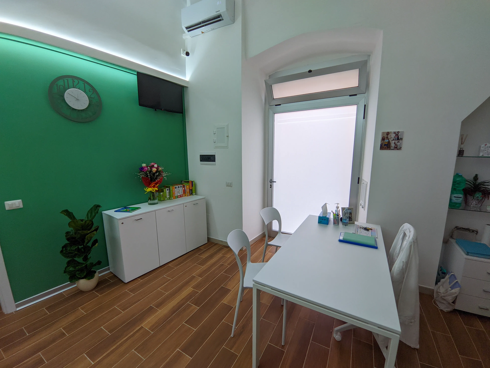

Lo studio
Un ambiente accogliente
Lo studio è situato in Via Agostino Gioia 112, Giovinazzo. Uno spazio pensato per mettere a proprio agio bambini e adulti durante ogni seduta.



Logopedista · Giovinazzo (BA)
Percorsi personalizzati di valutazione e riabilitazione logopedica per bambini, adolescenti e adulti. Dott.ssa Maria Pia Carrieri, laureata all'Università degli Studi di Bari e iscritta all'Albo TSRM-PSTRP.
Chi sono
Sono la Dott.ssa Maria Pia Carrieri, logopedista laureata presso l'Università degli Studi di Bari. Lavoro con bambini, adolescenti e adulti che presentano difficoltà nel linguaggio, nella comunicazione e nella voce.
Il mio metodo è centrato sulla persona: ogni percorso nasce da una valutazione accurata e si sviluppa attraverso obiettivi concreti e condivisi con il paziente e la famiglia. Credo nella collaborazione tra logopedista, paziente e, quando si tratta di minori, genitori e insegnanti.
Il mio studio a Giovinazzo è un luogo sereno e accogliente, pensato per mettere a proprio agio adulti e bambini fin dal primo incontro.
Aree di intervento
Dalla valutazione al trattamento, offro percorsi specializzati per ogni fascia d'età e ogni tipo di difficoltà comunicativa.
Valutazione e trattamento di ritardi nell'acquisizione del linguaggio in età prescolare, con interventi precoci per sostenere la comunicazione e la comprensione.
Interventi su difficoltà di sviluppo del linguaggio orale, comprensione ed espressione verbale, adattati all'età e al profilo del bambino.
Valutazione e riabilitazione delle disfonie, con approccio funzionale alla qualità vocale, alla respirazione e alla postura fonatoria.
Percorsi di terapia per la balbuzie basati su tecniche evidence-based, con attenzione agli aspetti emotivi e alla qualità di vita del paziente.
Sostegno logopedico dopo eventi cerebrovascolari per il recupero del linguaggio, della comprensione e della comunicazione funzionale.
Valutazione e trattamento di difficoltà comunicative, vocali e del linguaggio in età adulta, comprese situazioni post-traumatiche o neurodegenerative.
Lo studio
Lo studio è situato in Via Agostino Gioia 112, Giovinazzo. Uno spazio pensato per mettere a proprio agio bambini e adulti durante ogni seduta.

Prenota
La valutazione logopedica è il punto di partenza per comprendere le difficoltà e costruire un piano di intervento personalizzato. Compila il modulo oppure contattami direttamente su WhatsApp.
La prima visita include un colloquio anamnestico, l'osservazione clinica e la restituzione degli obiettivi terapeutici proposti.
Prenota su WhatsAppIn alternativa, compila il modulo a fianco e ti ricontatterò entro 24 ore.
Seduta di valutazione logopedica
Contattami
Via Agostino Gioia, 112
70054 Giovinazzo (BA)
| Lunedì – Venerdì | 8:30 – 13:00 / 15:00 – 19:00 |
| Sabato | Su appuntamento |
| Domenica | Chiuso |
Dove mi trovo
Facilmente raggiungibile dal centro di Giovinazzo e dalla ss16 bis.
Parcheggio nelle vicinanze.